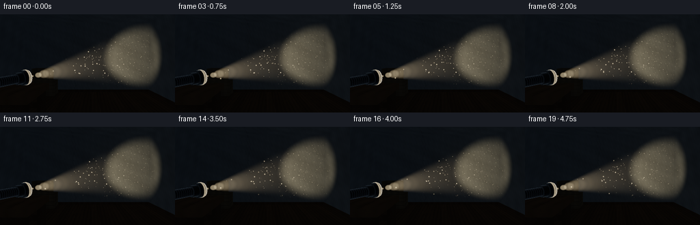
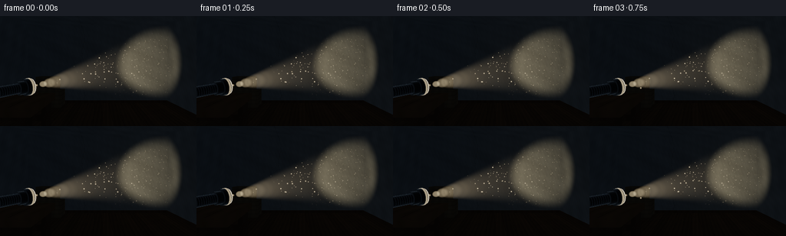

CODING AGENTS AS PIXEL WORLD MODELS
traex/GPT-6.1-Sol · phygen_052
点击播放 · 原生 RGB 像素
逐轮保存的候选
回放视频、检查图与代码变化。
每份候选均可单独播放。实际图片检查记录在下方工具轨迹中。
候选 01播放与检查图
点击播放 · 原生 RGB 像素


展开代码变化
--- 上一保存版本
+++ 本次保存版本
@@ -0,0 +1,262 @@
+"""Procedural RGB rendering of a flashlight scattering through airborne dust.
+Only numpy and Pillow are used; scene geometry and light transport are explicit.
+"""
+from pathlib import Path
+import json
+import numpy as np
+from PIL import Image, ImageDraw, ImageFilter
+import artifact_io
+
+ROOT = Path(__file__).resolve().parent
+SPEC = json.loads((ROOT/'task_spec.json').read_text())
+W,H = SPEC['width'], SPEC['height']
+S = 3
+w,h = W*S,H*S
+rng = np.random.default_rng(52017)
+
+def unit(v):
+ v=np.asarray(v,dtype=np.float32)
+ return v/np.maximum(np.linalg.norm(v,axis=-1,keepdims=True),1e-9)
+
+camera=np.array([0,1.58,5.2],np.float32)
+forward=unit([0,-.18,-7.4]); right=unit(np.cross(forward,[0,1,0])); up=np.cross(right,forward)
+focal=w/(2*np.tan(np.deg2rad(58)/2))
+yy,xx=np.mgrid[:h,:w].astype(np.float32)
+rays=unit(forward+(xx[...,None]+.5-w/2)/focal*right-(yy[...,None]+.5-h/2)/focal*up)
+light=np.array([-1.16,1.24,2.12],np.float32)
+axis=unit(np.array([2.35,1.72,-2.5])-light)
+cos_outer=np.cos(np.deg2rad(15.5)); cos_core=np.cos(np.deg2rad(8.5))
+light_color=np.array([1.0,.83,.58],np.float32)
+
+def beam(delta):
+ r2=np.sum(delta*delta,axis=-1)
+ c=np.sum(delta*axis,axis=-1)/np.sqrt(np.maximum(r2,1e-8))
+ q=np.clip((c-cos_outer)/(cos_core-cos_outer),0,1)
+ # Soft penumbra with a brighter central bundle rather than a hard triangle.
+ q=q*q*(3-2*q)
+ return q*np.exp(-.06*np.sqrt(r2))/np.maximum(r2,.08)
+
+# Closest surface buffers.
+depth=np.full((h,w),100,np.float32)
+normal=np.zeros((h,w,3),np.float32)
+mat=np.zeros((h,w),np.int16)
+
+def plane(dim,value,n,ident):
+ t=(value-camera[dim])/rays[...,dim]
+ hit=(t>0)&(t<depth)
+ depth[hit]=t[hit];normal[hit]=n;mat[hit]=ident
+
+plane(1,0,[0,1,0],1)
+plane(1,3.35,[0,-1,0],2)
+plane(0,-3,[1,0,0],2)
+plane(0,3,[-1,0,0],2)
+plane(2,-2.5,[0,0,1],2)
+boxes=[]
+def box(lo,hi,ident,shadow=True):
+ lo=np.asarray(lo,np.float32);hi=np.asarray(hi,np.float32)
+ a=(lo-camera)/rays;b=(hi-camera)/rays
+ near=np.minimum(a,b);far=np.maximum(a,b)
+ t=near.max(axis=-1);end=far.min(axis=-1)
+ hit=(t>0)&(end>=t)&(t<depth)
+ dim=near.argmax(axis=-1)
+ n=np.zeros_like(normal)
+ for k in range(3):n[...,k]=np.where(dim==k,-np.sign(rays[...,k]),0)
+ depth[hit]=t[hit];normal[hit]=n[hit];mat[hit]=ident
+ if shadow:boxes.append((lo,hi))
+
+# Thick old workbench at the lower left. The flashlight rests on its top.
+box([-2.7,.93,1.66],[-.86,1.055,2.96],3)
+for x in [-2.55,-1.00]:
+ for z in [1.79,2.8]:box([x-.075,0,z-.075],[x+.075,.95,z+.075],4)
+box([-2.65,.55,1.77],[-.95,.65,1.89],4)
+# A quiet set of storage crates at the far side, well away from the beam.
+box([-2.63,0,-2.32],[-1.42,.63,-1.49],5)
+box([-2.42,.63,-2.29],[-1.61,1.18,-1.63],5)
+# Baseboards around the room.
+box([-3,0,-2.49],[3,.105,-2.435],4,False)
+box([-2.999,0,-2.44],[-2.94,.105,4.7],4,False)
+box([2.94,0,-2.44],[2.999,.105,4.7],4,False)
+
+# Cylinders including caps, built directly from analytic ray intersections.
+def cylinder(start,length,radius,ident):
+ start=np.asarray(start,np.float32)
+ oc=camera-start
+ rd=np.sum(rays*axis,axis=-1);oa=np.dot(oc,axis)
+ rp=rays-rd[...,None]*axis;op=oc-oa*axis
+ a=np.sum(rp*rp,axis=-1);b=2*np.sum(rp*op,axis=-1);c=np.dot(op,op)-radius*radius
+ disc=b*b-4*a*c
+ root=(-b-np.sqrt(np.maximum(disc,0)))/(2*a)
+ axial=oa+root*rd
+ good=(disc>=0)&(root>0)&(axial>=0)&(axial<=length)&(root<depth)
+ p=camera+root[...,None]*rays
+ n=unit(p-start-axial[...,None]*axis)
+ depth[good]=root[good];normal[good]=n[good];mat[good]=ident
+ for s,norm in [(0,-axis),(length,axis)]:
+ t=(s-oa)/rd;p=camera+t[...,None]*rays
+ r=p-start-s*axis
+ good=(t>0)&(np.sum(r*r,axis=-1)<=radius*radius)&(t<depth)
+ depth[good]=t[good];normal[good]=norm;mat[good]=ident
+
+# Anodised aluminium barrel, ridged grip, broad reflector head, silver rim.
+cylinder(light-axis*.68,.47,.081,6)
+cylinder(light-axis*.69,.045,.095,7)
+for s in np.linspace(.25,.63,12):cylinder(light-axis*s,.013,.087,7)
+cylinder(light-axis*.245,.155,.112,6)
+cylinder(light-axis*.14,.115,.143,6)
+cylinder(light-axis*.07,.035,.151,7)
+cylinder(light-axis*.035,.035,.135,8)
+
+p=camera+depth[...,None]*rays
+# Multi-scale continuous plaster/wood noise (no external textures).
+def noise(p):
+ x,y,z=p[...,0],p[...,1],p[...,2]
+ return (.48*np.sin(3.71*x+5.38*y+2.83*z)*np.sin(4.8*z-2.31*y)
+ +.25*np.sin(14.7*x+10.4*y+8.9*z)*np.sin(11.2*y-7.3*x)
+ +.14*np.sin(44.1*x+35.8*z+19*y)+.07*np.sin(112.9*x-84*y+104*z))
+grain=noise(p)
+albedo=np.zeros((h,w,3),np.float32)
+# Background plaster: slightly cool gray brown, irregular staining.
+wall=(mat==2)
+stain=np.clip(.6+.3*np.sin(p[...,0]*1.2+p[...,2]*.8)+.3*np.sin(p[...,1]*2.4),0,1)
+albedo[wall]=(np.array([.35,.37,.365])*(.88+.12*grain[...,None])*(.9+.1*stain[...,None]))[wall]
+# Hairline cracks on the rear wall; deliberately subdued.
+crack=np.abs(p[...,0]-(-.65+.06*np.sin(p[...,1]*5)+.015*np.sin(p[...,1]*24)))<.003
+albedo[wall&crack]*=.55
+floor=mat==1
+board=np.floor((p[...,0]+3)/.285)
+g=np.sin(p[...,2]*2.2+p[...,0]*49)+.35*np.sin(p[...,2]*7+p[...,0]*160)
+woodvariation=.81+.07*np.sin(board*8.7)+.07*g+.055*grain
+albedo[floor]=(np.array([.245,.153,.084])*woodvariation[...,None])[floor]
+seam=(np.mod(p[...,0]+3,.285)<.006)|(np.mod(p[...,2]+2.5+(board%3)*.72,2.15)<.008)
+albedo[floor&seam]*=.42
+for ident,col in [(3,[.30,.183,.095]),(4,[.19,.119,.069]),(5,[.285,.215,.133])]:
+ sel=mat==ident
+ grainwood=.85+.10*grain+.06*np.sin(p[...,0]*24+np.sin(p[...,2]*3)*1.7)
+ albedo[sel]=(np.asarray(col)*grainwood[...,None])[sel]
+# Table plank seams and long scratches.
+table=(mat==3)&(normal[...,1]>.9)
+seam=(np.mod(p[...,0]+2.7,.31)<.008)
+albedo[table&seam]*=.45
+scratches=(np.sin(p[...,0]*175+p[...,2]*2.6)>.991)&(np.sin(p[...,2]*21)>.3)
+albedo[table&scratches]*=1.3
+# Crates have obvious slat gaps and darker edging.
+crate=mat==5
+slat=(np.mod(p[...,1],.155)<.009)
+albedo[crate&slat]*=.38
+albedo[mat==6]=[.035,.044,.052]
+albedo[mat==7]=[.12,.14,.155]
+albedo[mat==8]=[.65,.68,.66]
+
+# Surface radiance from the one real flashlight, with box occlusion.
+tolight=light-p
+ld=np.linalg.norm(tolight,axis=-1)
+lvec=tolight/np.maximum(ld[...,None],1e-6)
+ndotl=np.maximum(0,np.sum(normal*lvec,axis=-1))
+shadow=np.ones((h,w),np.float32)
+for lo,hi in boxes:
+ a=(lo-p)/np.where(abs(lvec)>1e-7,lvec,1e-7);b=(hi-p)/np.where(abs(lvec)>1e-7,lvec,1e-7)
+ entry=np.minimum(a,b).max(axis=-1);exit=np.maximum(a,b).min(axis=-1)
+ blocked=(exit>np.maximum(entry,.008))&(entry<ld-.025)&(exit>.025)
+ shadow[blocked]=.015
+illum=beam(p-light)*ndotl*shadow*15.5
+ambient=np.array([.031,.039,.051],np.float32)
+# Broad weak indirect bounce maintains readable room surfaces.
+bounce=.012*np.exp(-np.sum((p-np.array([1.8,1.2,-1.7]))**2,axis=-1)/8)
+linear=albedo*(ambient+(illum[...,None]+bounce[...,None])*light_color)
+# A gentle edge sheen makes the dark flashlight legible.
+metal=(mat==6)|(mat==7)
+view=-rays
+rim=np.maximum(0,1-np.abs(np.sum(normal*view,axis=-1)))**3
+linear[metal]+=(rim[...,None]*np.array([.055,.07,.084]))[metal]
+# Specular response, mostly from the collar nearest the bulb.
+half=unit(lvec+view)
+specular=np.maximum(0,np.sum(normal*half,axis=-1))**60
+linear[metal]+=(specular[...,None]*.5*light_color)[metal]
+
+# Single-scattering integration along each camera ray. A constant density
+# gives a continuous widening beam, not drawn outlines or a solid wedge.
+volume=np.zeros_like(linear)
+N=64
+for j in range(N):
+ t=depth*((j+.5)/N)
+ q=camera+t[...,None]*rays
+ delta=q-light
+ dist=np.sqrt(np.sum(delta*delta,axis=-1))
+ cosine=np.sum(unit(delta)*(-rays),axis=-1)
+ g=.24
+ phase=(1-g*g)/np.maximum((1+g*g-2*g*cosine)**1.5,.15)
+ scatter=beam(delta)*phase*.255*np.exp(-.025*t)*(depth/N)
+ # Dense but subtle swirls in the suspended background dust.
+ density=1+.10*np.sin(q[...,0]*3+q[...,1]*4)*np.sin(q[...,2]*2.7)
+ volume+=scatter[...,None]*density[...,None]*light_color
+linear=linear*np.exp(-depth[...,None]*.017)+volume
+# The light-emitting rim is visible even though the flashlight faces away.
+headcoord=np.sum((p-light)*axis,axis=-1)
+edge=(mat==7)&(headcoord>-.074)
+linear[edge]+=.26*light_color
+linear[mat==8]+=.55*light_color
+
+# Deterministic dust particles advected by a weak, upward room current.
+count=2600
+particles=np.column_stack([rng.uniform(-2.65,2.92,count),rng.uniform(.28,3.03,count),rng.uniform(-2.42,3.3,count)]).astype(np.float32)
+velocity=np.column_stack([rng.normal(.011,.016,count),rng.normal(.023,.014,count),rng.normal(.006,.014,count)]).astype(np.float32)
+phase=rng.uniform(0,2*np.pi,count)
+size=rng.uniform(.002,.009,count)
+brightness=rng.uniform(.25,1,count)**2
+# Rare closer grains have a softly defocused appearance, not star glints.
+
+def project(points):
+ rel=points-camera
+ z=rel@forward
+ return w/2+focal*(rel@right)/z,h/2-focal*(rel@up)/z,z
+
+def display(a):
+ # Filmic compression preserves the illuminated patch and warm white dust.
+ a=np.maximum(a,0)
+ a=(a*(2.51*a+.03))/(a*(2.43*a+.59)+.14)
+ a=np.clip(a,0,1)
+ a=np.where(a<=.0031308,12.92*a,1.055*a**(1/2.4)-.055)
+ return a
+
+frames=[]
+for fi in range(SPEC['frames']):
+ t=fi/SPEC['fps']
+ pos=particles+velocity*t
+ pos[:,0]+=.025*(np.sin(phase+t*.8)-np.sin(phase))
+ pos[:,1]+=.015*(np.sin(phase*1.7+t*.55)-np.sin(phase*1.7))
+ u,v,z=project(pos)
+ ix=np.clip(u.astype(int),0,w-1);iy=np.clip(v.astype(int),0,h-1)
+ # Surface tests use Euclidean distances, matching the ray buffer.
+ pd=np.linalg.norm(pos-camera,axis=-1)
+ power=beam(pos-light)
+ visible=(u>1)&(u<w-2)&(v>1)&(v<h-2)&(z>0)&(pd<depth[iy,ix]-.035)&(power>.0004)
+ dots=np.zeros((h,w,3),np.float32)
+ for k in np.flatnonzero(visible):
+ px,py=u[k],v[k]
+ rad=np.clip(focal*size[k]/z[k],.55,2.8)
+ # Larger soft blur for near-camera motes.
+ if z[k]<2.5:rad+=.75
+ rr=int(np.ceil(rad*2.4))
+ x0=max(0,int(px)-rr);x1=min(w,int(px)+rr+2)
+ y0=max(0,int(py)-rr);y1=min(h,int(py)+rr+2)
+ gy,gx=np.mgrid[y0:y1,x0:x1]
+ gaussian=np.exp(-((gx-px)**2+(gy-py)**2)/(2*rad*rad))
+ intensity=np.clip(power[k]*9,.012,.9)*brightness[k]
+ dots[y0:y1,x0:x1]+=gaussian[...,None]*intensity*light_color
+ # Very low, physically plausible bulb fluctuation, with no beam sweeping.
+ fluct=1+.005*np.sin(t*3.1)
+ a=linear+(fluct-1)*volume+dots
+ # Restrained optical bloom only in the light source and brightest particles.
+ hot=np.clip(a-.42,0,3)
+ bloomimg=Image.fromarray(np.uint8(np.clip(hot,0,1)*255))
+ blur=np.asarray(bloomimg.filter(ImageFilter.GaussianBlur(4)),np.float32)/255
+ a=a+blur*.105
+ rgb=display(a)
+ # Small fixed sensor grain gives tactile film detail without flickering noise.
+ if fi==0: sensor=rng.normal(0,.0012,(h,w,1)).astype(np.float32)
+ rgb=np.clip(rgb+sensor,0,1)
+ image=Image.fromarray(np.uint8(np.round(rgb*255))).resize((W,H),Image.Resampling.LANCZOS)
+ frames.append(np.asarray(image,dtype=np.uint8))
+
+artifact_io.save(np.stack(frames),ROOT)
+print('Saved',len(frames),'RGB frames:',np.stack(frames).shape)
可观测工具轨迹
实际执行的命令与返回图片。
命令 1exit 0
/bin/bash -lc 'ls -la && cat prompt.txt && cat GENERATION_RULES.md && cat task_spec.json'
命令 2exit 0
/bin/bash -lc "cat artifact_io.py && python - <<'PY'
import numpy,PIL
print('numpy',numpy.__version__)
print('PIL',PIL.__version__)
PY"命令 3exit 0
/bin/bash -lc "cat > generate.py <<'PY'
\"\"\"Procedural RGB rendering of a flashlight scattering through airborne dust.
Only numpy and Pillow are used; scene geometry and light transport are explicit.
\"\"\"
from pathlib import Path
import json
import numpy as np
from PIL import Image, ImageDraw, ImageFilter
import artifact_io
ROOT = Path(__file__).resolve().parent
SPEC = json.loads((ROOT/'task_spec.json').read_text())
W,H = SPEC['width'], SPEC['height']
S = 3
w,h = W*S,H*S
rng = np.random.default_rng(52017)
def unit(v):
v=np.asarray(v,dtype=np.float32)
return v/np.maximum(np.linalg.norm(v,axis=-1,keepdims=True),1e-9)
camera=np.array([0,1.58,5.2],np.float32)
forward=unit([0,-.18,-7.4]); right=unit(np.cross(forward,[0,1,0])); up=np.cross(right,forward)
focal=w/(2*np.tan(np.deg2rad(58)/2))
yy,xx=np.mgrid[:h,:w].astype(np.float32)
rays=unit(forward+(xx[...,None]+.5-w/2)/focal*right-(yy[...,None]+.5-h/2)/focal*up)
light=np.array([-1.16,1.24,2.12],np.float32)
axis=unit(np.array([2.35,1.72,-2.5])-light)
cos_outer=np.cos(np.deg2rad(15.5)); cos_core=np.cos(np.deg2rad(8.5))
light_color=np.array([1.0,.83,.58],np.float32)
def beam(delta):
r2=np.sum(delta*delta,axis=-1)
c=np.sum(delta*axis,axis=-1)/np.sqrt(np.maximum(r2,1e-8))
q=np.clip((c-cos_outer)/(cos_core-cos_outer),0,1)
# Soft penumbra with a brighter central bundle rather than a hard triangle.
q=q*q*(3-2*q)
return q*np.exp(-.06*np.sqrt(r2))/np.maximum(r2,.08)
# Closest surface buffers.
depth=np.full((h,w),100,np.float32)
normal=np.zeros((h,w,3),np.float32)
mat=np.zeros((h,w),np.int16)
def plane(dim,value,n,ident):
t=(value-camera[dim])/rays[...,dim]
hit=(t>0)&(t<depth)
depth[hit]=t[hit];normal[hit]=n;mat[hit]=ident
plane(1,0,[0,1,0],1)
plane(1,3.35,[0,-1,0],2)
plane(0,-3,[1,0,0],2)
plane(0,3,[-1,0,0],2)
plane(2,-2.5,[0,0,1],2)
boxes=[]
def box(lo,hi,ident,shadow=True):
lo=np.asarray(lo,np.float32);hi=np.asarray(hi,np.float32)
a=(lo-camera)/rays;b=(hi-camera)/rays
near=np.minimum(a,b);far=np.maximum(a,b)
t=near.max(axis=-1);end=far.min(axis=-1)
hit=(t>0)&(end>=t)&(t<depth)
dim=near.argmax(axis=-1)
n=np.zeros_like(normal)
for k in range(3):n[...,k]=np.where(dim==k,-np.sign(rays[...,k]),0)
depth[hit]=t[hit];normal[hit]=n[hit];mat[hit]=ident
if shadow:boxes.append((lo,hi))
# Thick old workbench at the lower left. The flashlight rests on its top.
box([-2.7,.93,1.66],[-.86,1.055,2.96],3)
for x in [-2.55,-1.00]:
for z in [1.79,2.8]:box([x-.075,0,z-.075],[x+.075,.95,z+.075],4)
box([-2.65,.55,1.77],[-.95,.65,1.89],4)
# A quiet set of storage crates at the far side, well away from the beam.
box([-2.63,0,-2.32],[-1.42,.63,-1.49],5)
box([-2.42,.63,-2.29],[-1.61,1.18,-1.63],5)
# Baseboards around the room.
box([-3,0,-2.49],[3,.105,-2.435],4,False)
box([-2.999,0,-2.44],[-2.94,.105,4.7],4,False)
box([2.94,0,-2.44],[2.999,.105,4.7],4,False)
# Cylinders including caps, built directly from analytic ray intersections.
def cylinder(start,length,radius,ident):
start=np.asarray(start,np.float32)
oc=camera-start
rd=np.sum(rays*axis,axis=-1);oa=np.dot(oc,axis)
rp=rays-rd[...,None]*axis;op=oc-oa*axis
a=np.sum(rp*rp,axis=-1);b=2*np.sum(rp*op,axis=-1);c=np.dot(op,op)-radius*radius
disc=b*b-4*a*c
root=(-b-np.sqrt(np.maximum(disc,0)))/(2*a)
axial=oa+root*rd
good=(disc>=0)&(root>0)&(axial>=0)&(axial<=length)&(root<depth)
p=camera+root[...,None]*rays
n=unit(p-start-axial[...,None]*axis)
depth[good]=root[good];normal[good]=n[good];mat[good]=ident
for s,norm in [(0,-axis),(length,axis)]:
t=(s-oa)/rd;p=camera+t[...,None]*rays
r=p-start-s*axis
good=(t>0)&(np.sum(r*r,axis=-1)<=radius*radius)&(t<depth)
depth[good]=t[good];normal[good]=norm;mat[good]=ident
# Anodised aluminium barrel, ridged grip, broad reflector head, silver rim.
cylinder(light-axis*.68,.47,.081,6)
cylinder(light-axis*.69,.045,.095,7)
for s in np.linspace(.25,.63,12):cylinder(light-axis*s,.013,.087,7)
cylinder(light-axis*.245,.155,.112,6)
cylinder(light-axis*.14,.115,.143,6)
cylinder(light-axis*.07,.035,.151,7)
cylinder(light-axis*.035,.035,.135,8)
p=camera+depth[...,None]*rays
# Multi-scale continuous plaster/wood noise (no external textures).
def noise(p):
x,y,z=p[...,0],p[...,1],p[...,2]
return (.48*np.sin(3.71*x+5.38*y+2.83*z)*np.sin(4.8*z-2.31*y)
+.25*np.sin(14.7*x+10.4*y+8.9*z)*np.sin(11.2*y-7.3*x)
+.14*np.sin(44.1*x+35.8*z+19*y)+.07*np.sin(112.9*x-84*y+104*z))
grain=noise(p)
albedo=np.zeros((h,w,3),np.float32)
# Background plaster: slightly cool gray brown, irregular staining.
wall=(mat==2)
stain=np.clip(.6+.3*np.sin(p[...,0]*1.2+p[...,2]*.8)+.3*np.sin(p[...,1]*2.4),0,1)
albedo[wall]=(np.array([.35,.37,.365])*(.88+.12*grain[...,None])*(.9+.1*stain[...,None]))[wall]
# Hairline cracks on the rear wall; deliberately subdued.
crack=np.abs(p[...,0]-(-.65+.06*np.sin(p[...,1]*5)+.015*np.sin(p[...,1]*24)))<.003
albedo[wall&crack]*=.55
floor=mat==1
board=np.floor((p[...,0]+3)/.285)
g=np.sin(p[...,2]*2.2+p[...,0]*49)+.35*np.sin(p[...,2]*7+p[...,0]*160)
woodvariation=.81+.07*np.sin(board*8.7)+.07*g+.055*grain
albedo[floor]=(np.array([.245,.153,.084])*woodvariation[...,None])[floor]
seam=(np.mod(p[...,0]+3,.285)<.006)|(np.mod(p[...,2]+2.5+(board%3)*.72,2.15)<.008)
albedo[floor&seam]*=.42
for ident,col in [(3,[.30,.183,.095]),(4,[.19,.119,.069]),(5,[.285,.215,.133])]:
sel=mat==ident
grainwood=.85+.10*grain+.06*np.sin(p[...,0]*24+np.sin(p[...,2]*3)*1.7)
albedo[sel]=(np.asarray(col)*grainwood[...,None])[sel]
# Table plank seams and long scratches.
table=(mat==3)&(normal[...,1]>.9)
seam=(np.mod(p[...,0]+2.7,.31)<.008)
albedo[table&seam]*=.45
scratches=(np.sin(p[...,0]*175+p[...,2]*2.6)>.991)&(np.sin(p[...,2]*21)>.3)
albedo[table&scratches]*=1.3
# Crates have obvious slat gaps and darker edging.
crate=mat==5
slat=(np.mod(p[...,1],.155)<.009)
albedo[crate&slat]*=.38
albedo[mat==6]=[.035,.044,.052]
albedo[mat==7]=[.12,.14,.155]
albedo[mat==8]=[.65,.68,.66]
# Surface radiance from the one real flashlight, with box occlusion.
tolight=light-p
ld=np.linalg.norm(tolight,axis=-1)
lvec=tolight/np.maximum(ld[...,None],1e-6)
ndotl=np.maximum(0,np.sum(normal*lvec,axis=-1))
shadow=np.ones((h,w),np.float32)
for lo,hi in boxes:
a=(lo-p)/np.where(abs(lvec)>1e-7,lvec,1e-7);b=(hi-p)/np.where(abs(lvec)>1e-7,lvec,1e-7)
entry=np.minimum(a,b).max(axis=-1);exit=np.maximum(a,b).min(axis=-1)
blocked=(exit>np.maximum(entry,.008))&(entry<ld-.025)&(exit>.025)
shadow[blocked]=.015
illum=beam(p-light)*ndotl*shadow*15.5
ambient=np.array([.031,.039,.051],np.float32)
# Broad weak indirect bounce maintains readable room surfaces.
bounce=.012*np.exp(-np.sum((p-np.array([1.8,1.2,-1.7]))**2,axis=-1)/8)
linear=albedo*(ambient+(illum[...,None]+bounce[...,None])*light_color)
# A gentle edge sheen makes the dark flashlight legible.
metal=(mat==6)|(mat==7)
view=-rays
rim=np.maximum(0,1-np.abs(np.sum(normal*view,axis=-1)))**3
linear[metal]+=(rim[...,None]*np.array([.055,.07,.084]))[metal]
# Specular response, mostly from the collar nearest the bulb.
half=unit(lvec+view)
specular=np.maximum(0,np.sum(normal*half,axis=-1))**60
linear[metal]+=(specular[...,None]*.5*light_color)[metal]
# Single-scattering integration along each camera ray. A constant density
# gives a continuous widening beam, not drawn outlines or a solid wedge.
volume=np.zeros_like(linear)
N=64
for j in range(N):
t=depth*((j+.5)/N)
q=camera+t[...,None]*rays
delta=q-light
dist=np.sqrt(np.sum(delta*delta,axis=-1))
cosine=np.sum(unit(delta)*(-rays),axis=-1)
g=.24
phase=(1-g*g)/np.maximum((1+g*g-2*g*cosine)**1.5,.15)
scatter=beam(delta)*phase*.255*np.exp(-.025*t)*(depth/N)
# Dense but subtle swirls in the suspended background dust.
density=1+.10*np.sin(q[...,0]*3+q[...,1]*4)*np.sin(q[...,2]*2.7)
volume+=scatter[...,None]*density[...,None]*light_color
linear=linear*np.exp(-depth[...,None]*.017)+volume
# The light-emitting rim is visible even though the flashlight faces away.
headcoord=np.sum((p-light)*axis,axis=-1)
edge=(mat==7)&(headcoord>-.074)
linear[edge]+=.26*light_color
linear[mat==8]+=.55*light_color
# Deterministic dust particles advected by a weak, upward room current.
count=2600
particles=np.column_stack([rng.uniform(-2.65,2.92,count),rng.uniform(.28,3.03,count),rng.uniform(-2.42,3.3,count)]).astype(np.float32)
velocity=np.column_stack([rng.normal(.011,.016,count),rng.normal(.023,.014,count),rng.normal(.006,.014,count)]).astype(np.float32)
phase=rng.uniform(0,2*np.pi,count)
size=rng.uniform(.002,.009,count)
brightness=rng.uniform(.25,1,count)**2
# Rare closer grains have a softly defocused appearance, not star glints.
def project(points):
rel=points-camera
z=rel@forward
return w/2+focal*(rel@right)/z,h/2-focal*(rel@up)/z,z
def display(a):
# Filmic compression preserves the illuminated patch and warm white dust.
a=np.maximum(a,0)
a=(a*(2.51*a+.03))/(a*(2.43*a+.59)+.14)
a=np.clip(a,0,1)
a=np.where(a<=.0031308,12.92*a,1.055*a**(1/2.4)-.055)
return a
frames=[]
for fi in range(SPEC['frames']):
t=fi/SPEC['fps']
pos=particles+velocity*t
pos[:,0]+=.025*(np.sin(phase+t*.8)-np.sin(phase))
pos[:,1]+=.015*(np.sin(phase*1.7+t*.55)-np.sin(phase*1.7))
u,v,z=project(pos)
ix=np.clip(u.astype(int),0,w-1);iy=np.clip(v.astype(int),0,h-1)
# Surface tests use Euclidean distances, matching the ray buffer.
pd=np.linalg.norm(pos-camera,axis=-1)
power=beam(pos-light)
visible=(u>1)&(u<w-2)&(v>1)&(v<h-2)&(z>0)&(pd<depth[iy,ix]-.035)&(power>.0004)
dots=np.zeros((h,w,3),np.float32)
for k in np.flatnonzero(visible):
px,py=u[k],v[k]
rad=np.clip(focal*size[k]/z[k],.55,2.8)
# Larger soft blur for near-camera motes.
if z[k]<2.5:rad+=.75
rr=int(np.ceil(rad*2.4))
x0=max(0,int(px)-rr);x1=min(w,int(px)+rr+2)
y0=max(0,int(py)-rr);y1=min(h,int(py)+rr+2)
gy,gx=np.mgrid[y0:y1,x0:x1]
gaussian=np.exp(-((gx-px)**2+(gy-py)**2)/(2*rad*rad))
intensity=np.clip(power[k]*9,.012,.9)*brightness[k]
dots[y0:y1,x0:x1]+=gaussian[...,None]*intensity*light_color
# Very low, physically plausible bulb fluctuation, with no beam sweeping.
fluct=1+.005*np.sin(t*3.1)
a=linear+(fluct-1)*volume+dots
# Restrained optical bloom only in the light source and brightest particles.
hot=np.clip(a-.42,0,3)
bloomimg=Image.fromarray(np.uint8(np.clip(hot,0,1)*255))
blur=np.asarray(bloomimg.filter(ImageFilter.GaussianBlur(4)),np.float32)/255
a=a+blur*.105
rgb=display(a)
# Small fixed sensor grain gives tactile film detail without flickering noise.
if fi==0: sensor=rng.normal(0,.0012,(h,w,1)).astype(np.float32)
rgb=np.clip(rgb+sensor,0,1)
image=Image.fromarray(np.uint8(np.round(rgb*255))).resize((W,H),Image.Resampling.LANCZOS)
frames.append(np.asarray(image,dtype=np.uint8))
artifact_io.save(np.stack(frames),ROOT)
print('Saved',len(frames),'RGB frames:',np.stack(frames).shape)
PY
OPENBLAS_NUM_THREADS=1 python generate.py"命令 4exit 0
/bin/bash -lc "python - <<'PY'
from pathlib import Path
import numpy as np
from PIL import Image
p=np.load('pixels.npz')['pixels']
f=np.stack([np.array(Image.open(f'frames/{i:02}.png')) for i in range(20)])
print('Packed tensor:',p.shape,p.dtype)
print('RGB min/max/mean:',f.min(),f.max(),f.mean())
print('Mean consecutive frame change:',np.abs(np.diff(f.astype(float),axis=0)).mean())
print('All required artifacts:',all(Path(x).exists() for x in ['generate.py','pixels.npz','index.html','inspection.png','transition_check.png']))
PY
command -v ffmpeg || true"保存候选 1 份；完成命令 4 次；可验证图片返回 0 张。原始 API 响应与完整日志保留在本地。